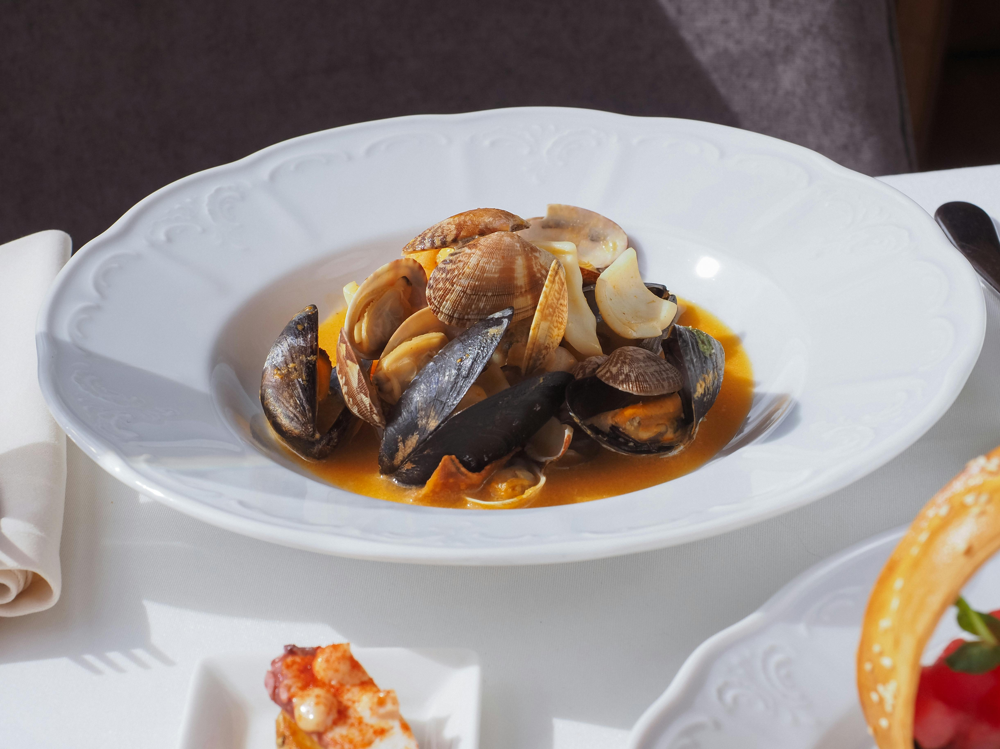
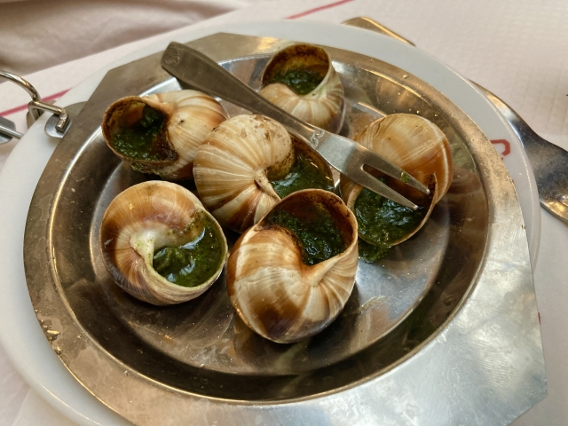

フランス
ブイヤベース

ブイヤベースは、南フランスのプロヴァンス地方発祥の伝統的な魚介スープです。
数種類の白身魚や甲殻類を使い、サフランやハーブで風味豊かに煮込みます。豊かな海の幸の旨味が凝縮された、代表的なフランス料理の一つです。
エスカルゴ

エスカルゴは、食用のカタツムリを指すフランス料理の食材、またはその料理です。
一般的にはニンニクとパセリを効かせたバターソースと共に殻に戻され、オーブンで焼いて提供されます。独特の食感とハーブの香りが特徴的な、フランスを代表するオードブルの一つです。